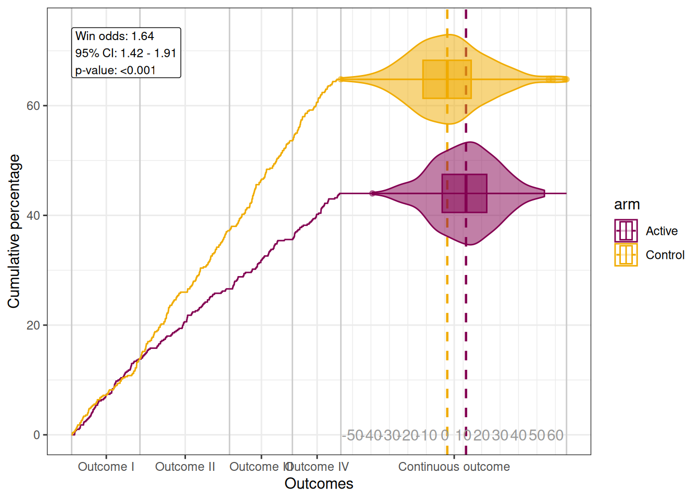

![]()
SUBJID GROUP GROUPN AVAL0 AVAL TRTP
1 1 Outcome I 0 120.440921 120.4409 Active
2 2 Continuous outcome 40000 3.345229 40003.3452 Control
3 3 Continuous outcome 40000 22.802615 40022.8026 Active
4 4 Outcome I 0 577.311386 577.3114 Control
5 5 Outcome II 10000 781.758081 10781.7581 Active
6 6 Outcome III 20000 985.097981 20985.0980 Control复合终点
有时，根据主要研究目的，我们很难从多个终点指标中选出其中某一个作为主要终点，此时，我们可以利用复合终点来作为主要终点。
Hierarchical composite endpoints (HCE)可以整合不同类型、不同重要性终点成一个有序终点指标，以表示患者经历的不同严重程度的终点。如，在固定随访的RCT中，outcomes of interest可以是death、hospitalization，而这两个终点存在严重程度的差异。很明显，死亡是最严重的。同样最终死亡的两个患者，生存时间更长，意味治疗效应更好；同样最终住院的两个患者，入院前时间更长，治疗效应更好；同样未住院的两个患者，某一实验室指标的change from baseline更大，效应更好。
对于这种HCE，我们可以计算win odds(Gasparyan et al. 2021)来比较组间差异，然而，治疗效应的可视化受到复合终点的影响，不容易像单纯的生存曲线那样用合适的工具可视化出来。
针对这一问题，AstraZeneca的Martin Karpefors等人提出了一种新的方法，即maraca plot(Karpefors, Lindholm, and Gasparyan 2023)。这种方法可以将复合终点中time to event(TTE)以及连续性终点的治疗效应可视化出来，同时也可以用来比较不同治疗组之间的差异。对应的R包可以方便地实现这一点。
maraca plot
maraca基于ggplot2，其中，对于TTE采用Kaplan-Meier曲线展示cumulative proportions，对于连续性终点可选用箱线图、violin plot以及scatter plot展示连续性分布。这种方法可以同时展示HCE的不同组成成分。
来看一个例子。
具体变量意义，大家可以查看?hce_scenario_a。
可视化如下：
column_names <- c(outcome = "GROUP", arm = "TRTP", value = "AVAL0")
tte_outcomes <- c("Outcome I", "Outcome II", "Outcome III", "Outcome IV")
continuous_outcome <- "Continuous outcome"
arm_levels <- c(active = "Active", control = "Control")
maraca_object <- maraca(
data, tte_outcomes, continuous_outcome, arm_levels, column_names,
fixed_followup = 3*365, compute_win_odds = TRUE
)
AZ_colors <- c("#830051", "#F0AB00")
plot(maraca_object, density_plot_type = "default") + theme_bw() +
scale_color_manual(values = AZ_colors) +
scale_fill_manual(values = AZ_colors)
结果解释
怎么看这张图？
首先是x轴上HCE的5个组成成分，x轴上每个成分的长度大小，代表了患者达到不同成分终点的比例，可以看到，continuous outcome的比例最大，说明这个终点的患者所占比例最大。其次，cumulative percentage显示active组在四个TTE终点上是存在差异的。再然后是continuous outcome的分布，偏向x轴右侧代表change from baseline更大。而这些结合起来，就是win odds的结果，可以看到，和我们从可视化的角度看到的结果是一致的。
代码已经放进了星球里。
References
Gasparyan, S. B., E. K. Kowalewski, F. Folkvaljon, O. Bengtsson, J. Buenconsejo, J. Adler, and G. G. Koch. 2021. “Power and Sample Size Calculation for the Win Odds Test: Application to an Ordinal Endpoint in COVID-19 Trials.” Journal Article. Journal of Biopharmaceutical Statistics 31 (6): 765–87.
Karpefors, M., D. Lindholm, and S. B. Gasparyan. 2023. “The Maraca Plot: A Novel Visualization of Hierarchical Composite Endpoints.” Journal Article. Clinical Trials (London, England) 20 (1): 84–88. https://doi.org/10.1177/17407745221134949.
Citation
BibTeX citation:
@online{lu2024,
author = {Lu, Zhen},
title = {Hierarchical Composite {endpoints治疗效应的可视化}},
date = {2024-05-13},
url = {https://leslie-lu.github.io/blog/2024/05/13/hierarchical_composite_endpoints/},
langid = {en}
}
For attribution, please cite this work as:
Lu, Zhen. 2024. “Hierarchical Composite
Endpoints治疗效应的可视化.” May 13, 2024. https://leslie-lu.github.io/blog/2024/05/13/hierarchical_composite_endpoints/.